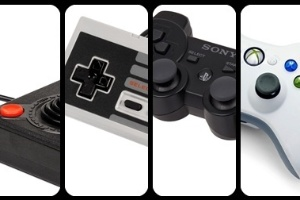

A história dos videogames é bem mais antiga do que você imagina. Você deve jogar seus games em um console ou computador potente e imagina que os videogames começaram com o Atari, certo? Mas a sua historia se inicia muito antes disso! Deixe o seu joystick ou teclado um pouco de lado para conhecer como nasceu nosso tão amado videogame.

Tudo começou pela década de 1950, quando cientistas da computação começaram a criar jogos e simuladores como parte de suas pesquisas. Nessa época, eram considerados videogames os jogos que transmitiam sinal para alguma espécie de tela, mesmo que a interação não acontecesse fora dela. Alguns jogos tinham a interação através de impressoras, por exemplo. Imagina a paciência pra jogar algo assim?! O primeiro videogame da história chamava-se Bertie The Brain e foi criado em 1950. Era um console enorme, de 4 metros, criado para desafiar os jogadores para um simples jogo da velha. Ele foi construído em Toronto (Canadá) pelo cientista Josef Kates. Depois de ficar por duas semanas exposto em uma feira, acabou caindo no esquecimento. O termo videogame evoluiu desde então passando de uma definição puramente técnica para um conceito que define um tipo de entretenimento interativo, como conhecemos hoje.
Os primeiros videogames eram basicamente computadores mais evoluídos, porém com velocidade e memória limitados. Com a evolução do campo da computação, muitas novidades surgiram, entre elas a memória RAM, que permitia que os computadores respondessem interações em tempo real. Em 1962, alguns alunos do MIT (Massachusetts Institute of Technology) criaram um dos primeiros jogos de computador, inspirado em histórias de ficção científica: Spacewar! O jogo acabou se espalhando entre a comunidade científica tornando-se um marco, mas ainda só rodava em computadores que custavam muito caro. Então chegou a década de 1970 com novos avanços tecnológicos, como os microchips, e mudou o rumo dos videogames para sempre. É em 1972 que chegam às prateleiras das lojas o primeiro console de videogames da história, o Odissey, fabricado pela Magnavox, uma subsidiária da Philips holandesa. O console evoluiu da versão 100 para 200, 300, 400, 500, 3000 e 4000. No mesmo ano surgia o Atari, com seu jogo viciante para época, o Pong.
Com o sucesso dos primeiros consoles, os anos seguintes foram de uma verdadeira evolução dos videogames e uma corrida pelo ouro para disputar a atenção e predileção dos jogadores. Em 1980, surge um dos jogos mais populares e que está no imaginário de todos os jogadores até hoje: o Pac-Man. Criado por Toru Iwatami, o jogo foi inovador, sendo o primeiro a apresentar o conceito de “power-up”. Um designer criou uma versão em primeira pessoa do Pac-Man e dá pra jogar de graça, se você tiver coragem. A partir disso, tivemos o grande alvorecer dos videogames: Donkey Kong surge em 1981, em 1985 a Nintendo faz testes para vender o NES (ou como apelidamos por aqui no Brasil: Nintendinho) nos Estados Unidos, em 1986, a Sega lança o Master System — saudades Alex Kidd — em 1989, a Nintendo fecha a década de 80 com o lançamento do Game Boy. A década de 1990 permitiu os portáteis com tela colorida, que se tornaram o sonho de qualquer garoto(a) da época – os três consoles mais importantes dessa geração: o Sega Satum em 1994, o PlayStation da novata Sony em 1995 e o Nintendo 64 em 1996. Em 2000, surge o PlayStation 2 que teve grande apoio dos desenvolvedores de jogos e desbancou lançamentos da Sega e da Nintendo. Em 2005, a Sony aposentou o PS1 e se dedicou às novas gerações do console. Hoje em dia Sony, Microsoft, que compete com o Xbox desde 2001, e Nintendo disputam entre si para produzir os melhores consoles e conseguir mais exclusividades de jogos. O bom disso é que a gente sempre sai ganhando com as novidades, né? Se você curtiu conhecer uma pouco da história dos videogames, compartilhe esse post nas redes para que seus amigos também possam saber mais sobre a evolução do videogame.